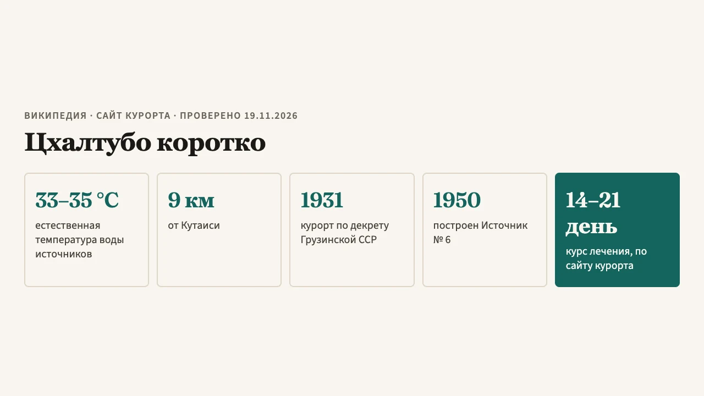
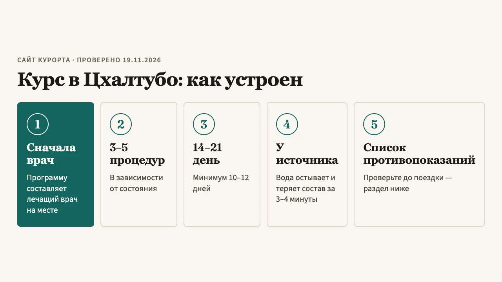
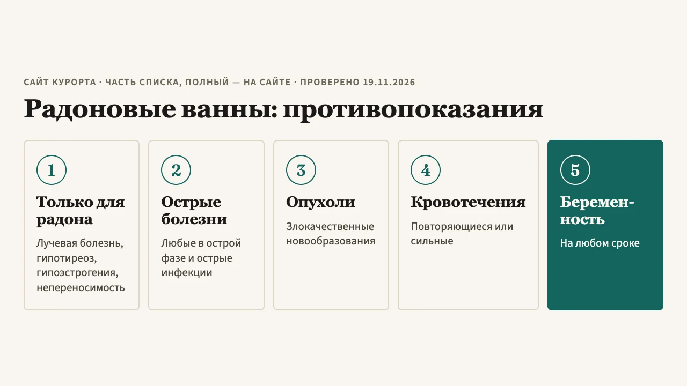
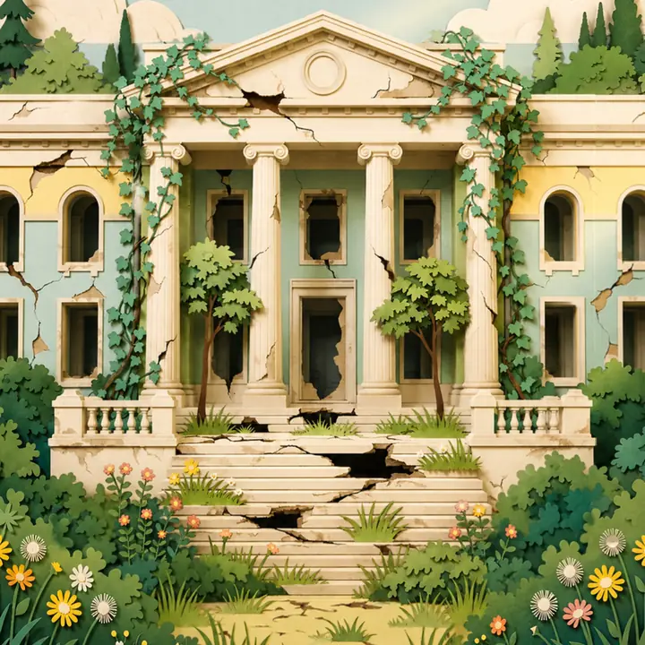

- Вода источников
- 33–35 °C
- До Кутаиси
- 9 км
- Курорт
- с 1931 года
- Курс
- 14–21 день
- Скорая
- 112
Статья входит в справочник о медицине в Грузии.
Цхалтубо: курорт рядом с Кутаиси
Это небольшой город на западе Грузии, выросший вокруг тёплых минеральных источников. По английской Википедии (на английском), он центр Цхалтубского муниципалитета в Имеретии.
Расстояния и высота — тоже по Википедии:
- до Кутаиси — 9 км;
- до Тбилиси — 240 км;
- над уровнем моря — 98 м.
Даже в самой Википедии высота указана по-разному: в карточке статьи стоит другая цифра. Мы даём ту, что в тексте статьи.
Источники здесь радоново-карбонатные. Их естественная температура — 33–35 °C, поэтому воду, пишет Википедия, используют без подогрева.
Курортом и бальнеологическим центром город стал в 1931 году — по декрету правительства Грузинской ССР.

Ближайший большой город — Кутаиси. О нём у нас есть отдельный путеводитель. Расписаний и цен на дорогу мы не даём: проверенных данных нет.
Наш совет. Если едете на курс, удобно жить в Кутаиси или в самом городе и приезжать на процедуры. Обратную дорогу с водителем обговорите заранее.

Радоновые ванны и Источник № 6
В Цхалтубо их принимают прямо у источников, в банях вроде Источника № 6, а не в гостинице. Живут в отелях, а на процедуры приходят.
Источник № 6
Это крупнейшая термальная баня Цхалтубо, которая работает до сих пор. По Википедии, её построили в 1950 году специально для Сталина. А в бане № 9, добавляет Википедия, есть фриз с его изображением.
По данным сайта курорта (на английском, сайт коммерческий), Источник № 6 — бальнеологическое учреждение, «не гостиница». Работает он, по тому же сайту, каждый день с 10:00 до 17:00.
Ещё несколько цифр из Википедии:
- минеральная вода поступает прямо в корпуса № 1 и № 6;
- там пять бассейнов, 37 индивидуальных кабин и 17 гидромассажных;
- всего в Цхалтубо больше 2 000 природных источников.
Почему лечебная процедура проходит у самого источника, объясняет сайт курорта. После выхода из земли вода за 3–4 минуты остывает и теряет свой химический состав.
Как устроен курс
Курс в Цхалтубо обычно длится две-три недели, а процедуры выбирает врач на месте. Вот что пишет сайт курорта:
- Курс — 14–21 день, минимум 10–12 дней.
- Программу для каждого составляет лечащий врач.
- Назначают 3–5 процедур. Какие и сколько — решает местный врач по общему состоянию человека.
Цен мы не даём: они на коммерческом сайте и меняются.
Профиль курорта. По Википедии, курорт специализируется на бальнеотерапии при болезнях кровообращения, нервной системы, опорно-двигательного аппарата, гинекологических и кожных. С 1970-х к этому добавилась спелеотерапия. Это профиль курорта, а не обещание результата.

Наш совет. Оставьте первый день на встречу с врачом: от неё зависит вся программа.
Противопоказания к радоновым ваннам
Список есть на сайте курорта. В нём ограничения именно для радонотерапии и общие — для любой бальнеотерапии.
Особые противопоказания к радонотерапии, по странице показаний (на английском, сайт коммерческий):
- Лучевая болезнь.
- Гипотиреоз.
- Гипоэстрогения.
- Индивидуальная непереносимость процедур.
Остальные, пишет тот же сайт, общие для бальнеотерапии:
- все болезни в острой фазе, хронические — в обострении и с острыми гнойными процессами;
- острые инфекционные болезни — до конца срока изоляции;
- венерические болезни в острой и заразной форме;
- психические болезни, все формы наркомании, алкоголизм, эпилепсия;
- болезни крови в острой стадии и при обострении;
- кахексия (сильное истощение) любого происхождения;
- злокачественные новообразования;
- повторяющиеся или сильные кровотечения;
- беременность на любом сроке;
- активный туберкулёз любой формы.
Кроме того, у отдельных болезней из списка показаний (сердце и сосуды, женские болезни, кожа) на той же странице свои противопоказания.
Есть что-то из списка или просто сомневаетесь — перед поездкой обсудите курс со своим врачом. На месте окончательно решает врач курорта.

Наш совет.
- Возьмите выписки и список своих лекарств, лучше на английском.
- Расскажите врачу на месте о любом диагнозе из списка, даже если он под контролем.
- Если врач говорит «нет», не ищите обходных путей.
Что пишет ВОЗ о радоне
Всемирная организация здравоохранения видит в этом газе риск, когда его вдыхают в помещениях. О лечебных ваннах в её бюллетене ничего нет.
Вот что пишет ВОЗ (на английском) в бюллетене от 25 января 2023 года:
- радон — природный радиоактивный газ;
- это одна из главных причин рака лёгких;
- газ бывает и в воде;
- выше всего его уровень в помещениях с плохой вентиляцией: в шахтах, пещерах, на водоочистных сооружениях;
- у курильщиков риск рака лёгких из-за радона намного выше.
О ваннах ВОЗ не пишет — ни о пользе, ни о вреде. Поэтому и мы ничего не утверждаем: подходит ли вам курс, решает врач.
Наш совет. Если вы курите, у вас болезнь лёгких или просто есть сомнения, спросите своего врача ещё дома.
Санатории: от 22 до руин
В советское время Цхалтубо был большим курортом, а после 1991 года опустел. Большинство старых корпусов сегодня — руины, пишет Википедия.
На пике, в 1960–70-е, здесь было 22 санатория. В советское время курорт принимал около 125 000 гостей в год.
После распада Союза в 1991 году санатории опустели, а с 1993-го многие корпуса отдали под жильё беженцам из Абхазии. По Википедии, там жили около 9 000 человек, в основном женщины и дети. Сколько людей живёт там сейчас, Википедия не пишет.

Заброшенные санатории
Большинство советских корпусов, по Википедии, сейчас заброшены и разрушены. Официальных данных о том, в каком состоянии здания, мы не нашли.
Наш совет.
- Считайте любое заброшенное здание аварийным и не заходите внутрь: полы, лестницы и крыши могут обрушиться.
- В некоторых корпусах десятилетиями жили люди и, возможно, живут до сих пор. Без приглашения туда не заходите.
- Прежде чем фотографировать людей, окна и дворы, спросите разрешения.
- Держите детей рядом и не сходите с открытых мест.
Пещеры рядом: Сатаплиа и Прометея
Две известные пещеры рядом, обе в Цхалтубском муниципалитете. В Сатаплиа к тому же есть следы динозавров.
Сатаплиа
Это заповедник у села Баноджа. По странице национальных парков Грузии (на английском), здесь можно увидеть:
- следы динозавров;
- карстовую пещеру;
- колхидский лес;
- стеклянную смотровую площадку.
Туристических троп две. Часы: весной и летом — 10:00–18:00, осенью и зимой — 10:00–17:00.
В блоке часов на странице написано «каждый день». А в гиде для посетителей (на английском) выходной — понедельник. Проверьте перед поездкой.
Правила парка по тому же гиду:
- нужна спортивная обувь;
- в дождь и снег на стеклянную площадку не пускают;
- с животными нельзя;
- экстренный номер — 112.
Пещера Прометея
Она у села Кумистави, примерно в 34 км от Кутаиси. По странице пещеры (на английском), залов в ней 22, а туристам открыто 6.
Маршрут — 1 420 м, около часа. Заканчивается он лодкой по реке Кумистави, но при подъёме воды лодку отменяют. Выходной — понедельник, обувь нужна спортивная.
Подробнее — в нашем путеводителе по каньону Мартвили (на английском).
Наш совет. Не ставьте пещеры на понедельник. Боитесь высоты — пропустите стеклянную площадку, троп хватит и без неё.
Где врач
Срочно — звоните 112. Если врач нужен не срочно, ближайший к Цхалтубо большой город — Кутаиси, в 9 км.
GOV.UK (на английском) советует: наберите 112 и попросите скорую — по-английски ambulance. Там же сказано, что вне Тбилиси медпомощь ограничена.
Клиники Кутаиси собраны в каталоге клиник Кутаиси на 100doc.ge.
Для въезда в Грузию иностранцу нужен полис с покрытием не меньше 30 000 лари — подробнее в нашем разделе о полисе для въезда.
Наш совет.
- Возьмите запас своих лекарств на всю поездку, в оригинальных упаковках.
- Стало плохо в воде — выйдите и сразу скажите персоналу.
- Сохраните в телефоне 112 и номер хозяина жилья.
Частые вопросы
Где находится Цхалтубо?
В Имеретии, на западе Грузии. По Википедии — в 9 км от Кутаиси и в 240 км от Тбилиси.
Что такое Источник № 6?
Крупнейшая действующая термальная баня города, построена в 1950 году для Сталина. Это не гостиница: здесь проходят процедуры, а живут в отелях.
Кому нельзя принимать радоновые ванны?
По данным сайта курорта, в списке — лучевая болезнь, гипотиреоз, острые болезни, злокачественные новообразования, сильные кровотечения, беременность и эпилепсия. Окончательно решает врач на месте.
Сколько длится курс?
По сайту курорта — 14–21 день, минимум 10–12 дней. Врач на месте назначает 3–5 процедур.
Опасен ли радон?
ВОЗ называет этот газ в воздухе помещений одной из главных причин рака лёгких. О лечебных ваннах ВОЗ не пишет. Подходит ли вам курс, решает врач.
Можно ли зайти в заброшенные санатории в Цхалтубо?
Наш совет — нет. Официальных данных о состоянии зданий нет, а в некоторых могут жить люди.
Когда открыты Сатаплиа и пещера Прометея?
Сатаплиа — весной и летом с 10:00 до 18:00, осенью и зимой с 10:00 до 17:00. В гидах для посетителей у обеих выходной — понедельник, так что проверьте перед поездкой.
Где найти врача рядом с Цхалтубо?
В Кутаиси, в 9 км: клиники собраны в каталоге из раздела «Где врач». Срочно — звоните 112 и просите скорую.
Источники
- Википедия: город, 9 км и 240 км, 98 м, 1931, 22 санатория, Источник № 6 (на английском, вторичный источник)
- Сайт курорта: Источник № 6 — часы, вода, курс (на английском, коммерческий сайт)
- Сайт курорта: показания и противопоказания (на английском, коммерческий сайт)
- ВОЗ: информационный бюллетень о радоне и здоровье, 25 января 2023 года (на английском)
- Национальные парки Грузии: Сатаплиа (на английском)
- Национальные парки Грузии: Сатаплиа — гид для посетителей (на английском)
- Национальные парки Грузии: пещера Прометея (на английском)
- Национальные парки Грузии: пещера Прометея — гид для посетителей (на английском)
- Национальные парки Грузии: как добраться до пещеры Прометея (на английском)
- GOV.UK: здоровье — 112, медпомощь вне Тбилиси (на английском)
Это справочная информация, а не медицинская консультация: лечение назначает врач. Проверено 19 ноября 2026 года.